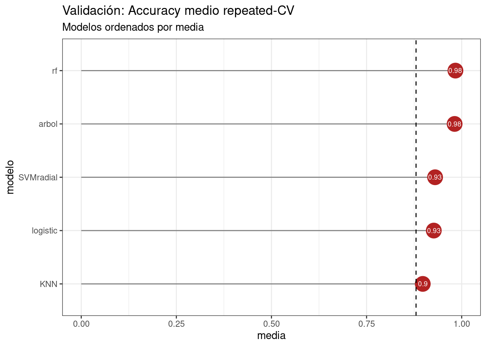
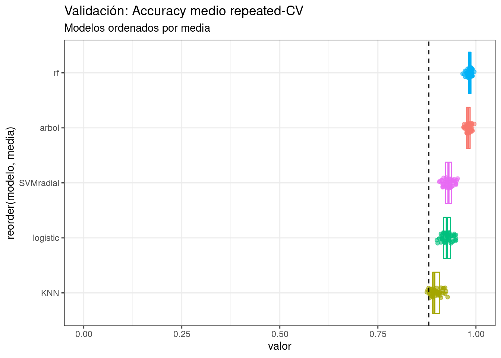

5 Evaluación y comparación de modelos
Para poder determinar si un método es superior a otro, no es suficiente con comparar los mínimos (o máximos dependiendo de la métrica) que ha conseguido cada uno, sino que hay que tener en cuenta sus varianzas para determinar si existen evidencias suficientes de superioridad.
Al tratarse de modelos entrenados y validados sobre los mismos datos, mismas particiones y en el mismo orden (siempre que se haya asegurado la reproducibilidad mediante semillas), se pueden emplear métodos estadísticos para datos dependientes.
modelos <- list(KNN = modelo_knn, logistic = modelo_logistic,
arbol = modelo_C50Tree, rf = modelo_rf,
SVMradial = modelo_svmrad)
resultados_resamples <- resamples(modelos)Se modifica el conjunto de datos para separar el nombre de cada modelo y las distintas métricas en la tabla:
metricas_resamples <- resultados_resamples$values %>%
gather(key = "modelo", value = "valor", -Resample) %>%
separate(col = "modelo", into = c("modelo", "metrica"),
sep = "~", remove = TRUE)metricas_resamples %>%
group_by(modelo, metrica) %>%
summarise(media = mean(valor)) %>%
spread(key = metrica, value = media) %>%
arrange(desc(Accuracy))## # A tibble: 5 × 3
## # Groups: modelo [5]
## modelo Accuracy Kappa
## <chr> <dbl> <dbl>
## 1 rf 0.984 0.960
## 2 arbol 0.981 0.954
## 3 SVMradial 0.930 0.829
## 4 logistic 0.927 0.821
## 5 KNN 0.898 0.748metricas_resamples %>%
filter(metrica == "Accuracy") %>%
group_by(modelo) %>%
summarise(media = mean(valor)) %>%
ggplot(aes(x = reorder(modelo, media), y = media, label = round(media, 2))) +
geom_segment(aes(x = reorder(modelo, media), y = 0,
xend = modelo, yend = media),
color = "grey50") +
geom_point(size = 7, color = "firebrick") +
geom_text(color = "white", size = 2.5) +
scale_y_continuous(limits = c(0, 1)) +
# Accuracy basal
geom_hline(yintercept = 0.88, linetype = "dashed") +
labs(title = "Validación: Accuracy medio repeated-CV",
subtitle = "Modelos ordenados por media",
x = "modelo") +
coord_flip() +
theme_bw()
metricas_resamples %>% filter(metrica == "Accuracy") %>%
group_by(modelo) %>%
mutate(media = mean(valor)) %>%
ungroup() %>%
ggplot(aes(x = reorder(modelo, media), y = valor, color = modelo)) +
geom_boxplot(alpha = 0.6, outlier.shape = NA) +
geom_jitter(width = 0.1, alpha = 0.6) +
scale_y_continuous(limits = c(0, 1)) +
# Accuracy basal
geom_hline(yintercept = 0.88, linetype = "dashed") +
theme_bw() +
labs(title = "Validación: Accuracy medio repeated-CV",
subtitle = "Modelos ordenados por media") +
coord_flip() +
theme(legend.position = "none")
El modelo random forest consigue el accuracy promedio más alto, seguido muy de cerca por el árbol de decisión y SVM. Para determinar si las diferencias entre ellos son significativas, se recurre a test estadísticos. Como se comentó al principio, teniendo en cuenta las métricas obtenidas por cada uno de ellos, siempre es menos complejo y costoso seleccionar el árbol de decisión por delante de un bosque de árboles.
5.0.1 Test de Friedman para comparar el accuracy de los modelos
matriz_metricas <- metricas_resamples %>% filter(metrica == "Accuracy") %>%
spread(key = modelo, value = valor) %>%
dplyr::select(-Resample, -metrica) %>% as.matrix()
friedman.test(y = matriz_metricas)##
## Friedman rank sum test
##
## data: matriz_metricas
## Friedman chi-squared = 177.79, df = 4, p-value < 2.2e-16Para un nivel de significancia (α = 0.05), el test de Friedman sí encuentra evidencias para rechazar la hipótesis nula de que los clasificadores consiguen la misma precisión, sin embargo, no determina que par o pares son diferentes. Para identificarlos, se recurre a contrastes post HOC.
La función diff() del paquete caret recibe como argumento los resultados de validación de dos o más modelos extraídos con resample() y hace comparaciones por pares aplicando un t-test pareado con correcciones por comparaciones múltiples. Esta función no permite mucha flexibilidad en cuanto a las comparaciones, por lo que, una vez extraídos los datos con resample(), suele ser preferible emplear otras funciones disponibles en R.
# Comparaciones múltiples con un test suma de rangos de Wilcoxon
metricas_accuracy <- metricas_resamples %>% filter(metrica == "Accuracy")
comparaciones <- pairwise.wilcox.test(x = metricas_accuracy$valor,
g = metricas_accuracy$modelo,
paired = TRUE,
p.adjust.method = "holm")
# Se almacenan los p_values en forma de dataframe
comparaciones <- comparaciones$p.value %>%
as.data.frame() %>%
rownames_to_column(var = "modeloA") %>%
gather(key = "modeloB", value = "p_value", -modeloA) %>%
na.omit() %>%
arrange(modeloA)
comparaciones## modeloA modeloB p_value
## 1 KNN arbol 7.647458e-09
## 2 logistic arbol 7.647458e-09
## 3 logistic KNN 7.647458e-09
## 4 rf arbol 2.535568e-02
## 5 rf KNN 7.647458e-09
## 6 rf logistic 7.647458e-09
## 7 SVMradial arbol 7.647458e-09
## 8 SVMradial KNN 7.647458e-09
## 9 SVMradial logistic 1.037745e-01
## 10 SVMradial rf 7.647458e-09Acorde a las comparaciones por pares, no existen evidencias suficientes para considerar que la capacidad predictiva de los modelos es distinta.